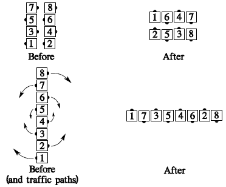
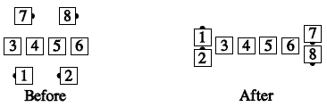

From any formation with no dancers facing directly toward or away from the flagpole center: Each dancer moves forward the designated number of quarters (1/4 unless otherwise specified) around the flagpole center of the formation, staying the same distance from that center as though he were on a wheel turning about that center. With each quarter he Counter Rotates, the dancer faces a new wall (i.e., he turns 90°).

The original outsides always finish as outsides, and the original centers always finish as centers. For example, "Points Counter Rotate 1/4":

Teaching Hint: From parallel waves, people tend to try to Split Counter Rotate. Describing the action, from that formation only, as "Concentric Box Counter Rotate" helps a great deal.